Experience
Education
Georgia Institute of Technology
M.S. in Electrical and Computer Engineering
Concentration in Digital Signal Processing (DSP)
2016 - 2017
Manhattan College
B.S. in Computer Engineering
Minor in Mathematics
2012 - 2016
Relevant Projects & Papers:
Skills
Programming:
Python, C++, MATLAB, C, JavaScript, HTML & CSS, Markdown, SQL, Unix, Bash, AWS
Software & Packages:
OpenGL, WebGL, Tensorflow/Keras, PyTorch, numpy, scipy, pandas, matplotlib, git, Latex
General:
Firmware Integration, Statistic Analysis, Low-Latency Code, Multi-Threaded Systems, C++ STL
Patents
Adaptive Beamforming Microphone Metadata Transmission to Coordinate Acoustic Echo Cancellation in an Audio Conferencing System
US Patent: US10854216B2
Projects Page
Click one of the links on the left to learn more about some of my projects.
ESRGAN Super-Resolution
The Enhanced Super-Resolution Generative Adversarial Network, or ESRGAN, is an improvement of standard Super-Resolution Generative Adversarial Networks (SRGAN) via introduction of the Residual-in-Residual Dense Block (RRDB). Essentially, the model takes an image and upscales it by a factor of 4. The results are much cleaner than when compared to traditional methods of upscaling images.
The ESRGAN model was trained using images of size 128x128, so in order to upscale larger images, I divide the image into 128x128 tiles and process those with the model, and then reassemble into the larger image. You can view the project's GitHub page here:
Link
Usage
First install the package with pip:
Then, import the package:
To evaluate the model:
esrgan.load_image("input.jpg")
highres_image = esrgan.evaluate()
And to save the super-resolution output:
save_image(highres_image, "output.jpg")
Results

Original
(1920 x 1080) - 1080p

Super-Resolution
(7680 x 4320) - 4K
The image labeled "Original" is the input to the ESRGAN model, and the image labeled "Super-Resolution" is the output from the model. Click them to view the full-size images.

Original
Super-Resolution
The images above are a zoom-in of some ripples on the water. The results can be very impressive.
JPEG Artifacts

Original
Super-Resolution
Although this image is an extreme example of JPEG compression, even artifacts that may be invisible to the naked eye (until closer inspection by zooming in on the image) can interfere with the ESRGAN model.
While the ESRGAN model shows impressively results, it is not perfect. As shown above (me in highschool), if there are distortions or artifacts (like those typically present in JPEG compression), the ESRGAN model will only amplify those distortions. Because of this, it is imperative to work with images that contain as little distortions as possible.
These distortions are typically a result of JPEG compression, which over time introduces more and more artifacts into an image. This is because JPEG compression is lossy, and not all of the original image information is preserved.
Although the original picture was downloaded long ago, I can guess a couple of things: the original image was probably a screen shot of a sample displayed on a school photography website to avoid paying for it. After the original image was taken, it was probably compressed once for storage on the web-hosting service, and then is possibly compressed again when displayed on the webpage. When saving the screen shot as a JPEG, the image is compressed even further. All these layers of compression introduce significant distortions that the ESRGAN model only amplifies.
Stitching Distortions
Example 1

Example 2
Because the ESRGAN model was trained on images of size 128x128, I convert the input image into separate 128x128 tiles to process individually by the model. Because of this, the borders of each tile will not align with its neighbors. This introduces what I will be calling stitching distortion.
The two images above show examples of stitching distortion occuring on the border of four 128x128 tiles. The stitching distortion, like the distortions introduced in JPEG compression, are typically not visible until closer inspection via zoom-in.
Currently, I can think of two ways to minimize or even eliminate these distortions:
1: Interpolate the regions near border intersections.
2. Increase the tile size in all directions during model evaluation, but then truncate the image again back to 128x128. This should give the model some information about the edges.
How It Works
The ESRGAN model is a modification of the SSResNet generator network pictured below. The "Basic Block" used in the SSResNet network is modified by removing all batch-normalization layers, and then combining the remaining convolution layers into multi-level residual and dense connections.
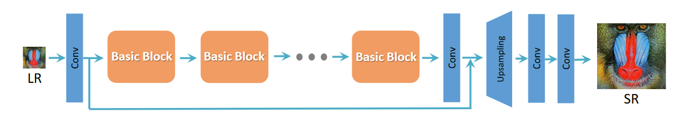
ESRGAN Model
The image to the below shows a detail of the modified Basic Block, called the Residual-in-Residual Dense Block (RRDB). All of the Basic Blocks in the SSResNet are replaced with RRDB units.
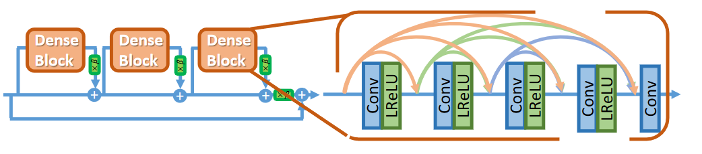
Residual-in-Residual Dense Block (RRDB)
The image below shows the network architecture for the discriminator - it follows the typical design standard for image classifiers and uses a variety of convolution and dense layers.

Discriminator Architecture
Because the ESRGAN model is trained on images of size 128x128, any images larger than that are divided into tiles and processed individually. This process is what most likely is introducing the stitching distortion, so this method needs to be revisited.
References
Xintao Wang, Ke Yu, Shixiang Wu, Jinjin Gu, Yihao Liu, Chao Dong, Chen Change Loy, Yu Qiao, Xiaoou Tang. ESRGAN: Enhanced Super-Resolution Generative Adversarial Networks. To appear in ECCV, 2018.
Christian Ledig, Lucas Theis, Ferenc Huszar, Jose Caballero, Andrew Cunningham, Alejandro Acosta, Andrew Aitken, Alykhan Tejani, Johannes Totz, Zehan Wang, Wenzhe Shi. Photo-Realistic Single Image Super-Resolution Using a Generative Adversarial Network. In CVPR, 2017.
https://www.tensorflow.org/hub/tutorials/image_enhancing
Style Transfer
Pictured to the right is the result of applying the style of an abstract painting to a picture of a cute dog.
I have written a Python package you can install with pip that encapsulates the model and associated evaluation functions into a simple wrapper. You can view the Github project page with the link below:
Link
Usage
First install the package with pip:
Then, import the package:
Initiate the StyleHub module, and load the content and style images:
stylehub.load_content(content_filename, 512)
stylehub.load_style(style_filename, 256)
To evaluate the model:
And to save the stylized output:
save_image(stylized_image, output_filename)
Results
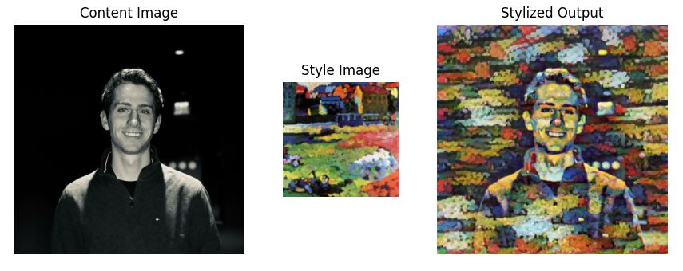 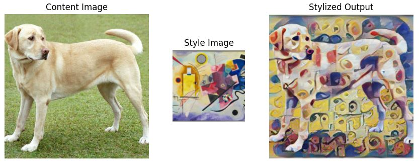How It Works
The image below shows the structure for the arbitrary style transfer model. The style prediction network P predicts an embedding vector S from an input style image, which supplies a set of normalization constants for the style transfer network.
Style Transfer Model
The style prediction network P is based on the Inception-v3 architecture and was developed as a way to scale up network architectures and avoid some of the increase in computational complexity that arises. Developed as an alternative to VGGNet, the Inception architecture offers improvements by avoiding representational bottlenecks, processing higher dimensional representations locally within a network (increasing the activations per tile), and factorizing large convolution filters into smaller ones.
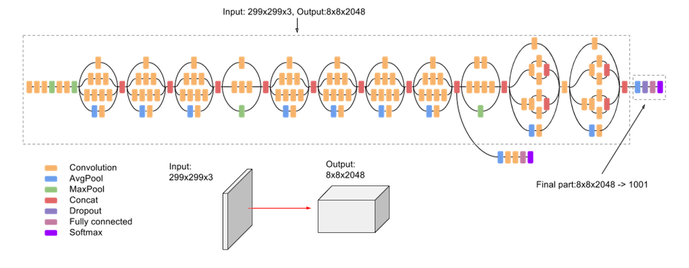
Inception-v3 Model
The Inception-v3 model (pictured above) is made up of both symmetric and asymmetric blocks like convolutions, average pooling, max pooling, concatinations, dropouts, and fully connected layers. Typically, each layer implements batch normalization, and the loss is computed using Softmax.
The style transfer network T is a convolutional neural network formulated in the structure of an image encoder/decoder. The mean is computed across each channel of the Inception-v3 output S, which is then connected to two fully connected networks to predict the final embeddings. The overall effect of the style transfer network is that it will shift the mean and variance of the content image in an attempt to match the mean and variance of the style image's features.
References
Golnaz Ghiasi, Honglak Lee, Manjunath Kudlur, Vincent Dumoulin, Jonathon Shlens. Exploring the structure of a real-time, arbitrary neural artistic stylization network. Proceedings of the British Machine Vision Conference (BMVC), 2017.
Christian Szegedy, Vincent Vanhoucke, Sergey Ioffe, Jonathon Shlens, Zbigniew Wojna. Rethinking the Inception Architecture for Computer Vision. In IEEE Computer Vision and Pattern Recognition (CVPR), 2015.
Xun Huang, Serge Belongie. Arbitrary Style Transfer in Real-time with Adaptive Instance Normalization. In ICCV, 2017
DCGAN
The image to the right describes the model architecture for the generator in a Deep Convolutional Generator Adversarial Network (DCGAN). This project implements a basic DCGAN for generating pictures of faces at a 64x64 resolution.
The project was originally started as a standalone Python project, but facing incredibly long training times on my local machine, I looked into using Google Colab notebooks as they allow access to 8 TPU's for a short period of time. Using TPU's reduced the training time by a factor of 10.
Over time, the network gets better at generating faces while also getting better at determing which faces are generated and which are from the original dataset. You can view the project's GitHub page here:
Link
Results


The above GIFs show the network training over 100 epochs. Over time, the generator gets better at generating faces and the discriminator will get better at spotting fakes. Just taking a quick glance at the GIFs, it looks like the network begins to generate decent faces, and then quality begins to degrade - this is most likely due to overfitting and can possibly be mitigated by using a larger dataset.


The images above are a snapshot of the network after 30 epochs of training. The network has already learned how to generate and discriminate basic facial structure and can even work with objects on the face such as sunglasses.


The images above are a snapshot of the network after 60 epochs of training. While the network has gotten better at refining some facial detail, distortions are beginning to be introduced.


The images above are a snapshot of the network after 90 epochs of training. The distortions have become very apparent.
How It Works
The image below shows the overall structure of the DCGAN. A random vector the length of the latent space is generated and used as an input to the generator network, which then generates a fake image. The fake image and an image from the dataset are used as inputs to the discriminator network, which determines which image is from the original dataset and which is the fake.
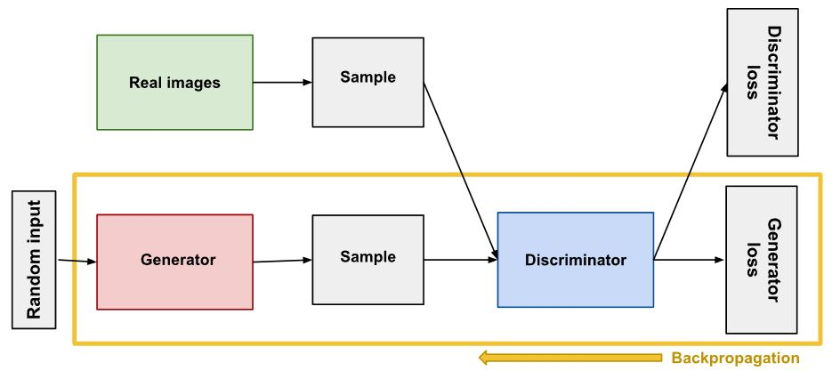
DCGAN Model
The dataset is the celebA dataset commonly used in facial recognition and face generation. It contains over 200,000 eye-aligned images of celebrity faces. To simplify this project and allow for reasonable training and evaluation times, the images are downsized to 64x64 and the network width is based off that. In order to use Google Colab, I had to host the celebA dataset on a Google Cloud Storage bucket - it currently has public access so the linked notebook should have access to it.
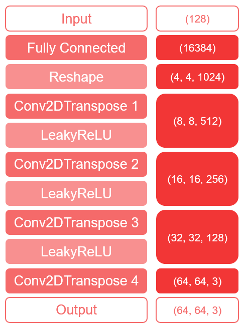
As shown above, the generator takes an input vector of size 128 and uses a fully connected layer in conjunction with 4 convolution layers to upscale the latent space to the correct image size.
The ReLU functions all use an alpha of 0.2 and the convolution layers use a kernel size of 5 and a stride of 2. The number of filters used in the convolution layers are 512, 256, 128, and 3 respectively. The fourth and final convolution layer also uses a sigmoid activation function.
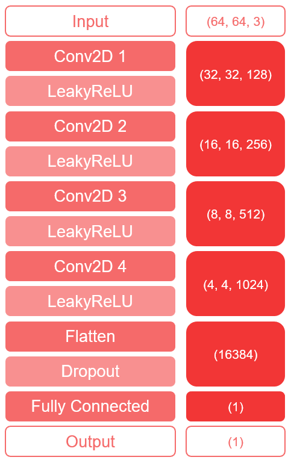
As shown above, the discriminator takes an input tensor of size (64, 64, 3) and uses 4 convolution filters in conjunction with a fully connected layer to extract features from the input and determine the probability that the input is real or fake.
The ReLU functions all use an alpha of 0.2 and the convolution layers use a kernel size of 5 and a stride of 2. The number of filters used in the convolution layers are 128, 256, 512, and 1024 respectively. The dropout layer uses a dropout rate of 20%, and the fully connected layer uses a sigmoid activation function.
References
https://developers.google.com/machine-learning/gan/generator
https://www.tensorflow.org/tutorials/generative/dcgan
https://keras.io/examples/generative/dcgan_overriding_train_step/
Django Website
Note: This project is no longer current, as I have opted to no longer deploy my website using Django. Using Heroku to host the app is starting to get expensive and using a static website tends to be a bit cheaper in this economic climate.
This project details the deployment of this website using Django. The previous version of my website had been using static HTML pages, which are easy to create and relatively simple, and integrating web applications can be done using Flask. By using Django to deploy the website, I can easy deploy my web-apps, as well as programmatically create pages.
The main attraction of using Django for my personal website was less of a necessity and more of a project. As I do not have hundreds of personal projects, using a database to store the project info is unnecessary, but still a fun exercise. It does allow me to more easily deploy my web-apps, as I have found Django to be much easier to use than integrating Flask.
Link
Overview
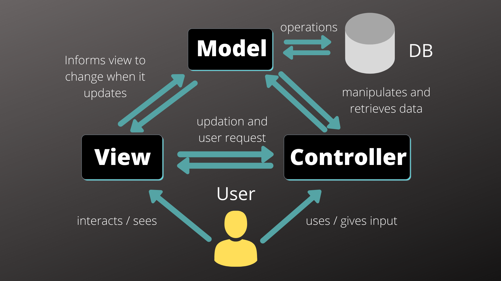
Django's web framework follows the Model-View-Controller (MVC) architectural pattern seen in the image above. Here is a high-level overview of how Django works:
Models: Python classes that represent the data structures of the application. These models define the database schema and handle interactions with the database.
Views: handle the logic behind processing and responding to HTTP requests. A view receives an incoming request, performs necessary operations such as querying the database using models, and then returns an HTTP response.
Templates: are used to generate HTML dynamically.
URLs: are used to maps URLs to views. URL patterns are defined that specify URLs and their corresponding view functions.
Middleware: are the components that sit between the web server and Django's view processing.
Django provides a high-level, Python-based framework that allows me to focus on building my web applications quickly and efficiently. It offers a wide range of built-in tools and libraries, simplifying common web development tasks and reducing the amount of code needed.
Django follows the Don't Repeat Yourself (DRY) principle, promoting code reusability. It provides a modular structure with reusable components called apps, which can be easily plugged into different projects. This modular approach helps in scaling applications as they grow and simplifies maintenance.
There were many instances of copy-and-pasting code in between pages in my old static HTML website. For example, the Navbar at the top of the page can be imported into each page easily in Django, but requires it to be copy-and-pasted into every HTML file when using static pages. Also, any changes made to an application imported using Django easily cascades to all pages, avoiding having to make the same changes to all files individually.
Templating
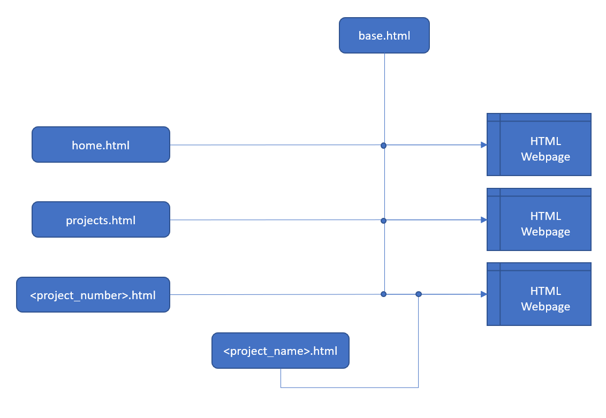
The general idea behind templating is to assemble an HTML webpage using different pieces, served by Django and populated with information from the database. For more simple requests like displaying a homepage, only some assembly is required.
The base.html file is attached to every HTML page and serves as a base for the website - applications like the Navbar and information like the footer are stored here, and easily imported into each individual HTML page.
The <project_name>.html file is attached to each project HTML page, and contains a more detailed breakdown of the project, installation of packages, and results.
Database Structure
High-level information about each project is stored in a database, so that it may be individually displayed on a general all-purpose Project Details template page. Each project has the following entries:
The title and description fields are used to populate the cards shown on the All Projects page.
The technology field is not fully implemented yet, but will be tied into a search function for the project list.
The image field is the image displayed in the project card, as well as the main banner image on the project detail page.
The details field contains a short description of the project that is included at the top of each project detail page.
The link field contains a link to the GitHub page for this project.
The project_content field links to a separate HTML file that will ride along with the project detail page, contained a more detailed breakdown of how the project works and results.
Finally, the tags field contains the relevant pages that are contained in the project_content HTML file. This allows for the mini-navbar to be generated at the bottom of the project summary.
Static Files
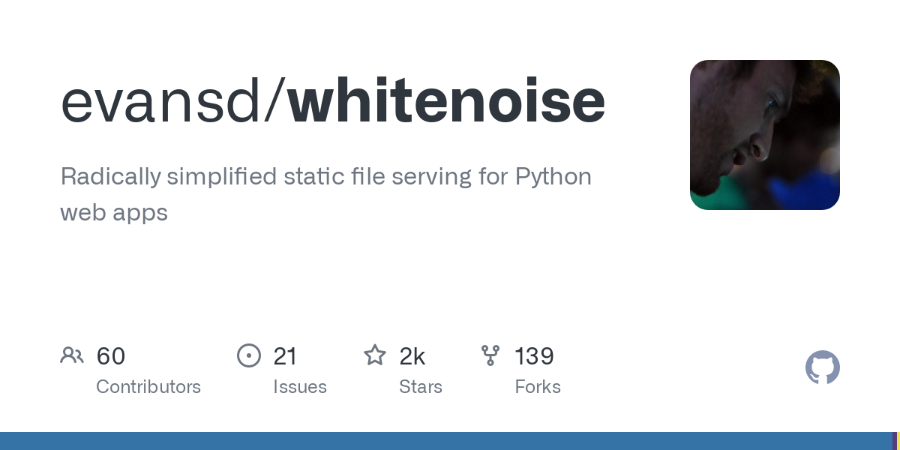
Typically, deploying a Django webpage into a live environment removes its ability serve static files, such as images. Instead of worrying about connecting to an EC2 instance and pulling the static files at runtime, I can instead use the Whitenoise middleware in Django. This allows me to still use static files, even when deployed, with the addition of only a few lines in my settings file.
Deployment and Hosting

The Django project is deployed using Heroku, as it allows for quick and easy deployment of Django projects, has easy integration for linking it to a domain, and is well-known across the industry. It also provides an easy way to set up SSL certificates and manage DNS settings, or route them elsewhere.
For this project, I chose to use CloudFlare to manage my DNS settings, since Heroku and Google Domains don't play well with naked domain names (a naked domain is "atparisi.com", and not "www.atparisi.com") - Google Domains only allows A-records for naked domains, and Heroku will only allow ALIAS or ANAME records, which Google Domains does not offer. To use a naked domain properly in Heroku, we must use the ALIAS or ANAME configuration at the domain level, which unfortunately CloudFlare does not offer either; however, CloudFlare does offer a service called "CNAME Flattening", which allows for CNAME entries to be used at the domain level. This allows me to use a naked domain when deployed using Heroku and a Google Domain.
Google Domains allows me to use a custom name server easily. All three services can be used together to deploy a live website in minutes, with very little configuration required.
OpenGL Renderer
This project details the development of a model renderer using OpenGL and GLFW.
This renderer uses OpenGL version 3.3 which is very widely supported. GLAD is used to handle the locating of driver-specific functions, enabling interoperability between different systems. GLFW is used to provide easy functionality for creating an OpenGL instance, handling user input, and displaying our buffer to a window.
Link

Overview
This renderer uses OpenGL version 3.3 which is very widely supported. GLAD is used to handle the locating of driver-specific functions, enabling interoperability between different systems. GLFW is used to provide easy functionality for creating an OpenGL instance, handling user input, and displaying our buffer to a window.
Features
Geometric shape rendering
Model loading using Assimp
Directional and Point light sources
Blinn-Phon lighting model with linear gamma correction
Directional shadow mapping
Omnidirectional shadow maps
Normal mapping
Structure
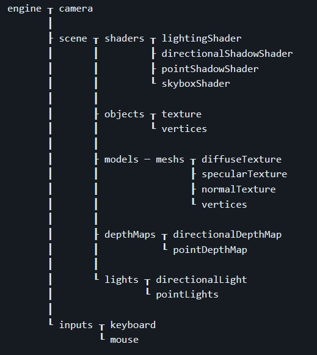
The engine handles the inputs from the keyboard and mouse, and therefore also handles the control of the camera. The camera and inputs are passed to the scene, which is rendered every frame. The scene contains a mixture of objects, models, and lights. In addition, there are various shaders attached to the scene that are used for different rendering conditions - like the generation of shadows.
Shadow Mapping
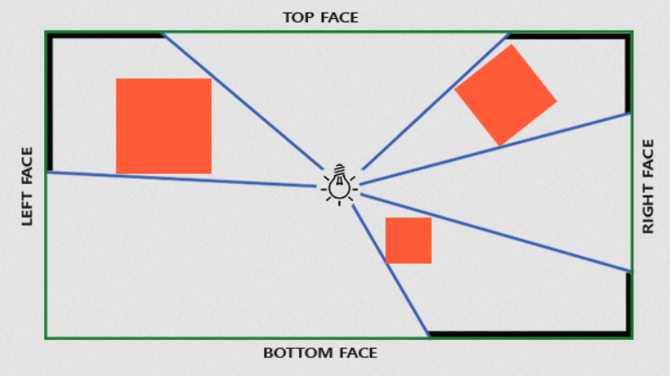
To generate both directional and point shadows, a shadow map is used - the scene is rendered from the point of view of the light source, and only the depth buffer is rendered. This allows each fragment to determine whether or not it is blocked from the light source.
For directional light sources, an orthographic projection matrix is used to render the depth buffer of a scene. For point sources, a cube map is used instead.
Model Loading
Model loading is performed used Assimp, which allows for the importing of models in a multitude of formats.
References
https://learnopengl.com/